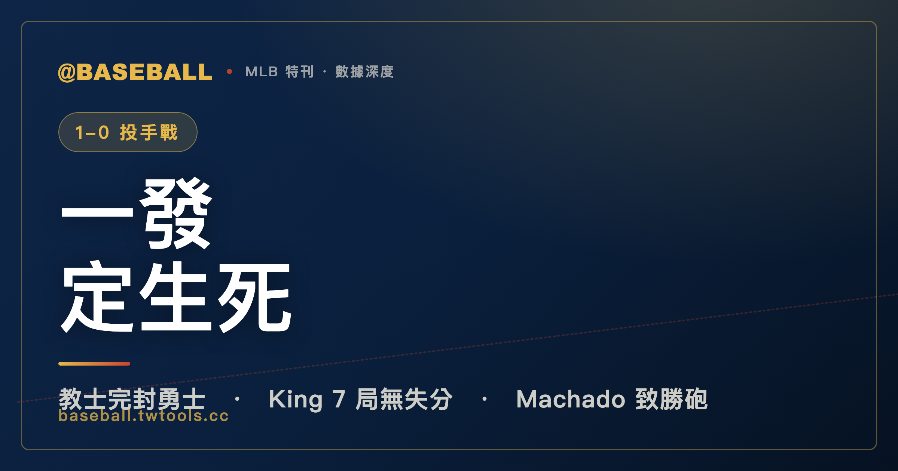

1-0 投手戰：金恩七局完封，馬查多一轟定生死，勇士七安打一分未得
七局零分、五次三振、零次四壞——麥可・金恩用這份成績單，在 2026 年 6 月 22 日讓排名國聯東區第一的亞特蘭大勇士全場鴨蛋。牛棚阿德里安・莫雷洪與梅森・米勒（Mason Miller）接力完封，後者拿下賽季第 21 次救援成功。唯一的得分，是曼尼・馬查多在第四局的一棒陽春全壘打。勇士全場七支安打，一分未得；先發格蘭特・霍姆斯（Grant Holmes）四又三分之二局一失分、四次三振，卻只能帶走敗投。聖地牙哥教士以 1-0 完封這支國聯東區領頭羊。

MLB 特刊｜2026.06.22 教士 1-0 勇士
棒球場上，有一種比賽的殘忍性是數字無法完整表達的——它的名字叫「一分差完封」。進攻一方打出七支安打，卻一分都帶不走；防守一方全場只敲出四支安打，卻靠著其中一棒的爆發把比分板上的數字從 0 推向 1，然後就這樣，一分不讓地守到終場。這就是 2026 年 6 月 22 日，聖地牙哥教士（San Diego Padres）在主場對亞特蘭大勇士（Atlanta Braves）所做的事。
最終比分是 1-0。這個數字簡單到幾乎令人費解——但每一個看完這場比賽的棒球迷，心裡都清楚，這九局裡發生的事，遠比 1-0 這個比分更精彩，也更緊繃。
一、賽前脈絡：國聯強隊西征，強碰強的跨分區日
走進 2026 年 6 月 22 日這場比賽之前，先把兩隊的處境放在桌上看清楚。
亞特蘭大勇士（Atlanta Braves）帶著 48 勝 31 敗的成績來到聖地牙哥，穩坐國聯東區（NL East）第一，在整個國家聯盟也是最威風的那一群球隊之一。整個賽季走到這個節點，他們的實力是被大多數人承認的——這不是一支走運走出來的領頭羊，而是一支憑真刀真槍打出戰績的強隊。48 勝對應 31 敗，這樣的勝率代表他們每打三場球，平均要贏下超過六成。帶著這樣的數字造訪客場，勝方的期待自然是被市場定價在上面的。
相對地，聖地牙哥教士（San Diego Padres）以 42 勝 37 敗居國聯西區（NL West）第二，落後分區龍頭整整 9 場勝場差（games back）。這不是一支讓人感到威脅的成績，但也不是一支應該被忽視的球隊。他們的問題在於，同分區的對手太難甩開，而他們在這種國聯內部的跨分區對決中每一場都有爭勝的理由。主場作戰，面對一支真正的強隊，這正是教士需要的那種考驗——也是需要幾位投手站出來說話的時刻。
把兩隊的戰績再放在一起對照，這場比賽的份量就更清楚了。48 勝 31 敗對 42 勝 37 敗，勝差大約是六場——這不是天差地遠的鴻溝，但在棒球的相對實力標尺上，已經足以讓勇士被視為「應該贏球」的那一方。國聯東區向來是公認競爭最激烈的分區之一，能在這樣的分區站上第一，代表勇士不是靠著欺負弱隊堆出戰績，而是在高強度的對抗中持續勝出。一支這樣的球隊，照理說攻擊端應該具備相當的破壞力——也正因如此，「被完封」這件事發生在他們身上，才特別值得寫成一篇文章。被完封從來不是強隊的常態，而當它發生時，往往不是強隊變弱了，而是對手那一天把投手戰打到了極致。
至於教士這一邊，42 勝 37 敗、落後分區龍頭 9 場勝差的處境，意味著他們在追趕的位置上，每一場硬仗都不能浪費。對一支在分區裡屈居第二、又被龍頭拉開到 9 場的球隊來說，能在主場完封一支聯盟最強等級的勇士，這場勝利的心理意義遠超過帳面上的一勝。它證明了這支球隊的投手深度足以在任何一天扼住強打對手的咽喉——而這恰恰是季後賽等級棒球最看重的能力。勝差 6 場、戰績一上一下的兩支球隊，在這個夏夜被擺進同一座球場，結果不是強隊輾過弱隊，而是弱勢一方用一場零失分的投手戰，把實力差距暫時抹平。這就是單場棒球的本質：賽季的長期樣本會說一支球隊是強是弱，但任何一個夜晚，九局之內，強弱都可以被一位先發投手的好球暫時凍結。
這場比賽還有一個重要的結構性因素：這是國聯內部的跨分區對決——兩隊同屬國家聯盟（National League），卻分屬西區與東區，平時不在同一個分區的排名戰裡正面廝殺，這樣的對決往往帶有一種「各據一方、純粹硬碰硬」的特質。勇士的強打陣容遭遇教士的投手群，理論上是一場值得期待的較量。但棒球這項運動最迷人的地方，正在於它對「理論上」有著一種獨特的藐視——數字告訴你誰比較強，比賽卻只負責決定那一天誰贏。2026 年 6 月 22 日這個夜晚，數字站在勇士那邊，比賽卻交給了教士。
二、投手戰全紀錄：金恩七局零分，繼而牛棚完封九局
這場比賽的核心，是麥可・金恩（Michael King）的那七局。
先把他當天的成績單攤開：7 局、被打 6 支安打、0 分、0 次保送、5 次三振。這不是一份「完美」的成績單，因為他確實讓勇士打出了 6 支安打，代表他整個七局下來，大多數時候並不是讓對手打不到球，而是讓對方打到球之後，就是串不起得分的關鍵一擊。這種「讓你打，但就是不讓你得分」的投球，某種程度上比三振榜的數字更難——它要求投手對每一個打者的處置都必須精準，把危機扼殺在萌芽之前，不讓任何一支安打演變成有威脅性的得分機會。
更值得注意的是：7 局、0 次保送。在這七個局裡，金恩沒有送出任何一個四壞球，這代表所有上壘的勇士打者都是靠安打靠自己上去的，沒有任何一個是靠著投手的控球失誤免費獲得的保送。0 保送讓勇士的反攻資源從一開始就被壓縮——要靠單純的安打串連得分，比同樣的安打數搭配保送難得多，因為安打通常間距較遠，而保送是免費的壘包，有了保送再接安打，跑者很容易連環推進。金恩就是憑著這個「零保送」的控球，把勇士那七支安打裡的六支都困在七局以內，沒讓任何一支轉化成得分。
金恩這一季的成績單同樣值得放在這場比賽的脈絡下看——不是因為他的賽季數字特別亮眼，而是因為它提供了一個誠實的框架。16 場先發、ERA 3.33、WHIP 1.16、92 局、78 次三振，這是一位聯盟水準之上的先發投手。戰績 5 勝 6 敗看起來普通，但對先發投手來說，勝敗紀錄受球隊整體攻守表現影響甚深，ERA 和 WHIP 更能反映他自己的投球品質。這場 7 局 0 分的表現，配上 0 保送，是他本季最乾淨的一場之一。
先發投手能走七局，在現代棒球裡本身就是一件相對稀缺的事。隨著各隊越來越依賴牛棚輪換和保護先發手臂的策略，七局以上的先發完投質量出賽（Quality Start 的加強版）已經成為一個寶貴資源。金恩這場不只投了七局，還做到了 0 四壞球——這代表他整場沒有任何一個打數是在自己處於不利球數的情況下送出保送，所有的出局都必須依靠打者去主動出棒或者被三振。這種「迫使打者做事」的投球風格，是聯盟頂尖先發投手的共同特質，也是金恩這一場最值得記住的技術細節。在勇士這樣的強打陣容面前，能繳出這份成績單，更顯不易。
| 麥可・金恩（Michael King）2026 賽季成績 | |
|---|---|
| 先發場次 GS | 16 |
| 勝敗 W-L | 5-6 |
| 防禦率 ERA | 3.33 |
| 投球局數 IP | 92.0 |
| 三振 K | 78 |
| WHIP | 1.16 |
這場 7 局 0 分的表現，放回金恩 2026 賽季的脈絡裡，幾乎可以稱為他的賽季代表作。一位 ERA 3.33、WHIP 1.16 的投手，平均每場大約會讓對手沾上一些得分；但這一場，他把這兩個數字暫時歸零，在一支國聯東區龍頭的打線面前繳出七局掛蛋。換句話說，這不是金恩「照常發揮」的一場，而是他把自己整季水準的上限往上頂了一截的一場。對一位戰績只有 5 勝 6 敗的先發投手而言，這種「投得好卻不一定拿得到勝」的循環，本身就是棒球對先發投手最常見的虧待；而這一次，球隊終於用馬查多的那一棒，把他應得的勝投還給了他。
七局結束之後，教士的牛棚接力登場。第八局由阿德里安・莫雷洪（Adrian Morejon）主投：1 局、0 安打、0 分、0 保送、2 次三振，拿下本賽季第 13 次中繼（Hold，H，13）。這是一個乾淨到不能再乾淨的第八局——三上三下、其中兩個出局靠三振解決，沒有任何一個勇士打者碰到壘包。在一場只領先 1 分的比賽裡，第八局往往是最容易被翻盤的危險地帶，因為對手知道時間不多了、會傾全力反撲；莫雷洪用一個 0 安打 0 保送的半局，把這個危險地帶徹底封死，讓教士帶著 1-0 的領先走向最後一關。中繼投手的價值常常被低估，因為他既拿不到勝投、也拿不到救援，但正是這種「銜接得天衣無縫」的一局，撐起了整場完封的中段。
最後一個守門人，是梅森・米勒（Mason Miller）。他在第九局上場救援：1 局、1 安打、1 次保送、0 分、2 次三振——這個成績單裡有兩個「讓人捏把冷汗」的項目，分別是那 1 支安打和 1 次保送。換句話說，勇士在第九局曾有人上壘，有人站上了壘包，最後的封關並非毫無壓力的一帆風順；但米勒終究守住了這 1-0 的領先，拿下賽季第 21 次救援成功（S，21）。值得放大來看的是他那 2 次三振：在第九局、領先只有 1 分、壘上又有跑者的情況下，三振是最有價值的出局方式，因為它完全不給對手用滾地球或高飛犧牲打把跑者送回來的機會。米勒在這個最緊繃的半局裡，用兩次三振直接抹掉了勇士最後的反撲想像。
第 21 次救援成功，在一個長達一百餘場賽季的棒球世界裡，是一個需要高度穩定性才能累積到的數字。救援成功這個項目的殘酷之處在於，它幾乎不容許失敗——一個救援投手只要在第九局被追平或逆轉，這場比賽前面八局所有人的努力就會瞬間付諸流水。能累積到 21 次，代表米勒被教士在 21 個「贏球只差最後三個出局」的夜晚交付重任，而他 21 次都把門關上了。這場 1-0、領先只有一分的比賽，正是這類「最高難度救援」的典型；他在這種壓力下完成第 21 次，把這個數字的含金量又墊高了一層。莫雷洪的中繼加上米勒的救援，等於把金恩留下的領先，用兩個乾淨俐落的半局封進了保險箱。
三位投手，九局，不讓一分——這就是教士這場勝利的骨幹。
教士（主）投手完整成績
| 投手 | 局數 IP | 安打 H | 失分 R | 自責分 ER | 保送 BB | 三振 K | 備註 |
|---|---|---|---|---|---|---|---|
| 麥可・金恩（Michael King） | 7.0 | 6 | 0 | 0 | 0 | 5 | 勝投（W，5-6） |
| 阿德里安・莫雷洪（Adrian Morejon） | 1.0 | 0 | 0 | 0 | 0 | 2 | 中繼（H，13） |
| 梅森・米勒（Mason Miller） | 1.0 | 1 | 0 | 0 | 1 | 2 | 救援成功（S，21） |
三、致勝一擊：馬查多第四局的陽春全壘打
在這場 1-0 的投手戰裡，每一個細節都變得格外珍貴，而全場唯一的得分，就是來自曼尼・馬查多（Manny Machado）在第四局擊出的那一支陽春全壘打。
所謂「陽春」（Solo HR），意思是全壘打落地時，壘上沒有任何隊友——打者自己跑完全壘，只推進一分。這是全壘打的最低產出，因為沒有打點機會可以共享，一棒就只帶回一分。但在一場 1-0 的比賽裡，這一分就是最終的勝差。一支陽春全壘打，成為教士全場得分的唯一來源，也是這場比賽的決勝點。
馬查多這一季的打擊成績放在這裡，需要誠實地呈現：出賽 77 場、14 支全壘打、43 分打點、打擊率 .184、OPS .645。打擊率 .184 是一個偏低的數字，放在一位像馬查多這樣的球員身上，更顯得特別——他不是那種打擊率會跌到這個水準而讓人不意外的球員。但全壘打 14 支和打點 43 分代表，即便整季打擊率偏低，他在「有球飛出去」的時候仍然具有生產力。這場比賽恰好是一個縮影：他當天 3 個打數有 2 支安打、1 支全壘打、1 分打點，在一場全隊只靠這 1 分的比賽裡，他就是那個讓教士贏球的人。
| 曼尼・馬查多（Manny Machado）2026 賽季成績 | |
|---|---|
| 出賽場次 G | 77 |
| 全壘打 HR | 14 |
| 打點 RBI | 43 |
| 打擊率 AVG | .184 |
| OPS | .645 |
把這一棒放進馬查多整季 14 支全壘打的脈絡裡，會看到一個有趣的對比。一名打擊率只有 .184 的打者，整季卻能累積 14 轟、43 分打點，這代表他的價值高度集中在「長打」這個項目上——他不是靠安打如雨地堆積數據，而是靠著少數幾次把球扛出牆的爆發來貢獻。對球隊而言，這樣的打者就像一張「低命中率、高賠率」的牌：多數打席可能沒有產出，但只要他揮出那一棒，往往就是改變比分結構的一棒。2026 年 6 月 22 日這一場，正是這張牌兌現的時刻——在一場雙方都打不開的低比分僵局裡，恰恰是這種「一棒定生死」型的打者，最有機會用單一一次揮擊終結比賽。
更值得玩味的是，這支陽春全壘打雖然在打點欄只記了 1 分，但它在這場比賽裡的「實質權重」是 100%。一般情況下，一支單打、一分打點，在 9-8 的比賽裡可能只是眾多得分裡的一筆；但在 1-0 的比賽裡，這一分就是全部。馬查多這場 3 個打數敲出 2 支安打、貢獻全隊唯一的得分與唯一的打點，等於是一個人扛起了整支球隊的進攻。在棒球這項講究團隊串連的運動裡，能出現「一個人的得分就是全隊的得分」這種畫面，本身就是低比分比賽才會給出的奇景。
陽春全壘打能夠成為致勝一擊，有一個前提：投手群必須守住這一分。如果金恩沒有繳出那七局零分，如果牛棚在第八、九局鬆動，那這一棒全壘打的價值就會被稀釋甚至歸零。也正因為如此，馬查多的那一棒和金恩的那七局，在這場比賽裡是不可分割的——沒有一方，另一方就失去意義。這是 1-0 棒球最純粹的形式：一個人的打擊、另一個人的投球，在九局之內緊緊扣著彼此。
四、敗方視角：勇士七安打，一分未得
現在把鏡頭轉向另一側的棒球故事，這一側有時候比勝方更耐讀。
亞特蘭大勇士這天全場敲出 7 支安打，輸了 0 分。「7 安打、0 分」這個組合，代表的不是勇士打不到球，而是他們打到了球、上了壘，卻始終無法把壘上的跑者推回本壘。這種得分效率失效的狀況，在棒球裡有個說法叫做「殘壘（stranded runners）」——打者上了壘，但下一個打者沒能把他打回來，他就這樣留在壘上，等到三出局後悻悻然走回休息區。7 支安打的分散程度，加上金恩整個七局 0 次保送，意味著勇士靠安打上壘的跑者，從來沒能夠藉助保送的助力形成連鎖反應。安打來了，但下一棒沒跟上；安打又來了，又沒跟上。七局下來，就這樣一分未得。
在勇士的打者裡，奧斯汀・賴利（Austin Riley）是最醒目的那一位：4 個打數、3 支安打，打擊表現突出，但 0 分打點。這個 3 支 4 打數的成績在積分板上完全沒有轉化成得分，正是「打得到、串不起來」這個困局最直接的縮影。你打出了 3 支安打，佔了全隊 7 安打裡的三支，卻一分沒帶回來——棒球的得分效率有時就是這麼殘酷。
然後是格蘭特・霍姆斯（Grant Holmes）。
霍姆斯這場投了 4 又 2/3 局，被打 3 支安打、失掉 1 分（自責分 1）、送出 5 次保送、取下 4 次三振，最終吞下敗投（L，4-4）。在一場你的球隊一分都沒得的比賽，先發投手拿敗投幾乎是命定的——只要對手得了 1 分，你就得輸。但這裡要把話講清楚：霍姆斯不是被打爆的那種敗投，他是一個投得不差、但球隊沒有幫他得分的 tough-luck 敗投。4 又 2/3 局、1 個自責分、ERA 在這場後變成接近聯盟平均——他沒有失控，他沒有讓對手炸裂，他只是投了一場「如果球隊得了 2 分以上就能贏」的比賽，可惜球隊那天只得了 0 分。
把霍姆斯這場拆得更細，會更體會到「tough-luck」這三個字的份量。他被打的安打只有 3 支——對一位先發投手來說，4 又 2/3 局只被打 3 支安打，是相當不錯的壓制力。而他那 1 個自責分，全部來自馬查多的陽春全壘打那一棒；換言之，扣掉那一發，霍姆斯這場其實是「無失分」的內容。一位先發投手只失 1 分、只被打 3 支安打、還飆出 4 次三振，這樣的成績單在絕大多數的比賽裡都足以拿下勝投或至少不敗——可是這一天，他的球隊一分未得，於是這份原本體面的成績單，最後只能對應到一個冰冷的「L」。這就是 tough-luck 敗投最典型的長相：不是投手沒投好，而是隊友沒幫上忙。
把他這場放回賽季成績裡看也是同樣的故事。霍姆斯整季 ERA 4.17、4 勝 4 敗，是一位中段班的先發投手；而他這場 4 又 2/3 局只丟 1 分的內容，品質其實高於他自己的賽季平均。也就是說，他在這場交出了「優於平均」的一場，戰績卻從原本的不勝不敗變成 4 勝 4 敗——投得比平常好，結果卻比平常糟。這種錯位，正是先發投手最無能為力的部分：他能控制的是自己投出的每一顆球，卻控制不了隊友能不能把球打回來。
不過有一個數字值得細看：5 次保送。在 4 又 2/3 局裡送出 5 次保送，代表控球並非這場的強項，而保送在棒球裡就是把跑者免費送上壘。理論上，一位送出 5 次保送的投手，是把自己一次次推向危險的邊緣——每一個免費上壘的跑者，都是一顆有可能引爆的炸彈。霍姆斯能在送出這麼多保送的情況下，仍然把失分壓在 1 分，某種程度上也說明他在有人上壘的險境裡守住了關鍵的出局。然而，弔詭的是，教士這場靠安打打出的那 1 分，恰好又是在霍姆斯的投球局數裡發生的——那支馬查多的陽春全壘打，正好就是霍姆斯當天被打到的那 1 分失分。這也是棒球的諷刺之一：霍姆斯送了 5 次保送，把自己逼到牆角好幾次，但真正擊倒他的那一拳，卻不是那些保送堆出來的危機，而是一支壘上無人時被扛出牆的全壘打。
霍姆斯離場後，勇士的牛棚依序派出迪迪耶・富恩特斯（Didier Fuentes）、詹姆斯・卡林恰克（James Karinchak）、以及狄倫・多德（Dylan Dodd）接力，三人合計投了 3 又 1/3 局、合計被打 1 支安打、0 分、合計 5 次三振。換句話說，勇士的牛棚這場其實表現相當穩健，沒有再讓教士補分——而教士在第四局之後，也確實再也沒有得分。但既然已經輸了 1 分，牛棚的穩定就成了一種「錦上添花卻已太晚」的局面。
勇士（客）投手完整成績
| 投手 | 局數 IP | 安打 H | 失分 R | 自責分 ER | 保送 BB | 三振 K | 備註 |
|---|---|---|---|---|---|---|---|
| 格蘭特・霍姆斯（Grant Holmes） | 4.2 | 3 | 1 | 1 | 5 | 4 | 敗投（L，4-4） |
| 迪迪耶・富恩特斯（Didier Fuentes） | 0.1 | 0 | 0 | 0 | 0 | 1 | — |
| 詹姆斯・卡林恰克（James Karinchak） | 1.2 | 0 | 0 | 0 | 1 | 1 | — |
| 狄倫・多德（Dylan Dodd） | 1.1 | 1 | 0 | 0 | 1 | 3 | — |
五、比分板全紀錄
把這場比賽的逐局得分攤開，能看得更清楚。
逐局得分（Line Score）
| 球隊 | 一 | 二 | 三 | 四 | 五 | 六 | 七 | 八 | 九 | R | H | E |
|---|---|---|---|---|---|---|---|---|---|---|---|---|
| 亞特蘭大勇士（客） | 0 | 0 | 0 | 0 | 0 | 0 | 0 | 0 | 0 | 0 | 7 | 0 |
| 聖地牙哥教士（主） | 0 | 0 | 0 | 1 | 0 | 0 | 0 | 0 | X | 1 | 4 | 1 |
第四局，教士主場，R 欄從 0 跳到 1——那就是馬查多的全壘打。X 代表主場球隊在領先的情況下，第九局無需出場打擊，比賽直接結束。勇士的 7 支安打分布在九局之間，但逐局得分欄全部是 0，這個畫面說明了一切。
關鍵打者成績
| 打者 | 球隊 | 打數 AB | 安打 H | 全壘打 HR | 打點 RBI |
|---|---|---|---|---|---|
| 曼尼・馬查多（Manny Machado） | 教士（主） | 3 | 2 | 1 | 1 |
| 奧斯汀・賴利（Austin Riley） | 勇士（客） | 4 | 3 | 0 | 0 |
六、更大的意義：低比分棒球，與它的殘酷美學
1-0 這個比分，在現代棒球裡已經是一個稀缺品。隨著進攻端的數據革命和全壘打風潮興起，得分越來越高、比賽越來越爆炸性的比賽反而是主流。一場 1-0 的九局完封，在任何一個賽季都是珍稀的敘事。
這場比賽讓人想起幾個低比分棒球的核心命題。第一個命題是：在 1-0 的棒球世界裡，每一個出局數都是珍貴的。 金恩拿下 21 個出局數，其中 5 個用三振解決，其餘靠守備配合；莫雷洪拿下 3 個出局數，其中 2 個用三振解決；米勒拿下最後 3 個出局數，且在有跑者的壓力下完成封關。27 個出局數，由三個人以接力的方式完成，每一個出局數都事關重大，因為任何一個演變成得分的失誤，這場比賽的結局就會改寫。
第二個命題是：一分的代價。 對勇士而言，這場比賽的問題不在於投手——霍姆斯的 1 失分在整體來看是可接受的，而勇士牛棚後續完全封住了教士的攻勢。問題在打線：48 勝 31 敗的聯盟強權，全場 7 支安打一分未得。這不是打線崩盤，而是效率的失敗——安打「散」而不「聚」，無法在同一局形成連鎖威脅。棒球比賽的得分需要安打加上時機，而時機，恰好就是金恩那七局把控得最好的東西。
第三個命題，屬於教士球迷的那一面：42 勝 37 敗、落後分區龍頭 9 場的球隊，打敗了國聯東區第一（48-31）的球隊。 這不僅僅是一場國聯跨分區對決的勝利，更是一個信號——這支教士隊有能力在重要比賽中祭出完封、有能力靠一支全壘打守住最終比分。在一個漫長的 162 場賽季裡，這樣的比賽常常是球隊重新找回節奏的轉折點。
對梅森・米勒（Mason Miller）而言，這場的意義還附帶一個具體的里程碑：賽季第 21 次救援成功。21 次，代表在超過半個賽季的時間裡，他幾乎每隔一週就有一次成功的救援；代表當教士需要把比賽交給最後一個守門人的時候，有這個數字作為背書。21 次救援不是一個偶然的結果，它是穩定性的量化表達。
霍姆斯（Grant Holmes）那張敗投的成績單值得被善待。他整季的數字——15 場先發、4 勝 4 敗、ERA 4.17、WHIP 1.42——不是一份頂尖先發的成績單，但也不是一個讓球隊失望的投手。這場 4 又 2/3 局、5 次保送，他的控球給自己帶來了一些麻煩，但 1 個自責分在任何一個正常得分的比賽裡都應該是可以守住的本錢。只是這場的勇士打線沒能幫他。有些敗投，不是投手的錯。這場就是其中一個。
| 格蘭特・霍姆斯（Grant Holmes）2026 賽季成績 | |
|---|---|
| 先發場次 GS | 15 |
| 勝敗 W-L | 4-4 |
| 防禦率 ERA | 4.17 |
| 投球局數 IP | 73.1 |
| 三振 K | 65 |
| WHIP | 1.42 |
低比分棒球的魅力，在於它把所有的冗餘都壓縮掉，只留下最關鍵的那幾個時刻。在一場 9-8 的比賽裡，你可以在某一局鬆懈、某一個打數放棄，然後還有時間追回來；但在一場 1-0 的比賽裡，沒有這樣的空間。第四局那一棒馬查多的全壘打，是唯一的機會，而教士把握住了；金恩那七局的零保送，是比賽走向的關鍵骨架，而他也做到了。這種緊繃，才是 1-0 棒球最讓人著迷的地方——它是一種被壓縮到極致的緊張，不容分心，不留餘裕。
還有一個面向值得思考：勇士是一支 48 勝 31 敗的球隊，卻在這場被完封。完封並不只是被三振；這場勇士被三振只有 5 次（金恩的 5K），大多數出局是靠守備配合完成的。勇士打到了球，七支安打的產出在一般情況下應該足以得分，但教士的防守在關鍵時刻穩住了陣腳。這提醒我們，現代棒球的得分並不只是投手與打者的對決，守備在低比分比賽裡同樣扮演著不可忽視的角色。一個失誤雖然在教士的欄位留下了 E=1，但最終並未演變成失分，這也是教士這場完封得以成立的隱藏條件之一。
從一個更宏觀的角度來看，這場 1-0 勝利對教士而言有著超越單場勝負的意義。42 勝 37 敗的戰績讓他們在分區排行榜上看起來不特別顯眼，但打出這樣一場比賽，代表這支球隊在投手配置和比賽管理上有著足夠的質量去和東區強隊分庭抗禮。棒球的 162 場賽季是一場長跑，重要的不只是今天的勝負，而是球隊能否在需要的時候祭出這種「投手主導、一分守到底」的能力。這種能力，教士在 2026 年 6 月 22 日展示了。
最後，值得用一個更大的框架來理解這場比賽：它本質上是一場「投手與長打的拉鋸」。現代棒球的進攻哲學越來越往長打傾斜——打者願意用更多的三振去換取把球扛出牆的機會，因為一支全壘打的得分效率，遠高於辛苦串連好幾支安打。這場比賽把這個哲學推到了極端：教士全隊只敲出 4 支安打，卻靠著其中唯一一支離開球場的長打贏球；勇士敲出多達 7 支安打，卻因為沒有任何一支變成全壘打、又無法把零散的安打串成得分，最終一分未得。安打數 7 比 4，得分卻是 0 比 1——這個倒掛的對比，幾乎可以當成「長打為什麼凌駕於安打數量」的教科書案例。
但這場比賽真正的主角，終究是投手。金恩、莫雷洪、米勒三個人聯手，把一支國聯東區龍頭的打線壓在 0 分，等於是用投手戰證明了：再強的打線，只要遇上把每一個出局數都當成生死關卡來處理的投手群，也可能整場啞火。低比分棒球的魅力就在這裡——它不靠煙火般的得分轟炸來娛樂觀眾，而是靠一種近乎室內樂的精密與緊繃，讓每一顆好球、每一個出局、每一次壘上的跑者，都承載著放大數倍的重量。2026 年 6 月 22 日，聖地牙哥的這個夜晚，就是這種棒球最完整的一次示範：一棒全壘打、七局零分、九局完封，加總起來，剛好等於 1 比 0。
本文棒球場上的個人數據（逐局得分、打擊成績、投手成績、賽季成績）均引自 MLB 官方 StatsAPI（box score／line score）。數據統計範圍：2026 年球季例行賽，賽事日期 2026-06-22。